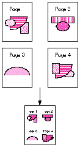
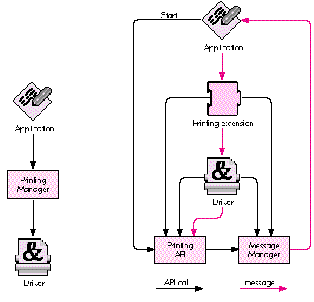

With QuickDraw GX comes a new extensible printing architecture that simply invites
you to jump in and tinker. Writing printer drivers has never been easier. But with
the advent of printing extensions, you may never have to write a printer driver again!
This article tells you what you need to know to create QuickDraw GX printing
extensions.
Macintosh system software has long provided hooks that enable developers to add
system-level features in the form of INITs (now called system extensions) and cdevs
(control panels). QuickDraw GX extends the extension concept to printing viaprinting
extensions, plug-in software modules whose sole purpose in life is to modify the
behavior of printing. Want to stamp the word "Confidential" on every page printed to a
specific printer? Write a printing extension. Want to drive a sheet feeder attachment
to a LaserWriter? Write a printing extension. Chances are that if there's something
you want to do that the QuickDraw GX printing architecture doesn't already do, you can
do it with a printing extension.
In this article, I'll describe the steps you must take to create a QuickDraw GX printing
extension. By the end of the article we'll have a working, environmentally friendly
extension called 4-Up. As shown in Figure 1, the 4-Up printing extension maps four
document pages onto one physical page at print time, saving countless trees in the
process!
Notice that I referred to a printing extension as a "software module." I would love to
use the currently hip term "component," but I don't want to confuse the issue by
implying that printing extensions are implemented as Component Manager components.
In fact, printing extensions are a whole new sort of beast. QuickDraw GX includes a
new low-level software manager called the Message Manager, which it uses to
implement its extensible printing architecture. A printing extension is a client of the
Message Manager called amessage handler. The Message Manager manages the
construction of a hierarchy of related message handlers into a message class, allows
message objectsto be instantiated from message classes, and directs messages among
message handlers. I won't be going into too much detail about the Message Manager in
this article. But there are times when you'll have to call the Message Manager directly
from your printing extension, so you need to be aware of it.

Figure 1 4-Up at Work
Another new manager included in QuickDraw GX is the Collection Manager, which
manages the creation of lightweight extensible data structures calledcollections.
QuickDraw GX printing makes heavy use of collections. Although we won't need to call
the Collection Manager from the 4-Up extension, nearly all serious printing
extensions will need to do so.
Before we jump into the technical details of writing a printing extension, it will be
helpful to have a general overview of the QuickDraw GX printing process. First, I'll
describe how the printing process occurs in several distinct phases, each responsible
for a specific subtask of the entire process. Then, I'll explain the flow of control under
QuickDraw GX printing, as contrasted with that of the Printing Manager. And finally,
I'll discuss how printing extensions fit into the picture.
THE FOUR SEASONS OF PRINTING
Under QuickDraw GX, printing occurs in four distinct phases:
GO WITH THE FLOW
At the highest level, the flow of control under QuickDraw GX printing remains similar
to that in the existing Printing Manager. There are three major players: the
application, the printing API, and the printer driver. The printing application calls a
layer of printing API routines, each of which either performs some task or calls the
appropriate printer driver to perform some task. However, there are two major
differences in QuickDraw GX printing. First, the printing API has been greatly
expanded. And second, the way in which control is transferred from the API to the
driver is completely different. I won't be going into detail about the expanded printing
API -- but you'll need to understand the new flow of control in order to write printing
extensions.
The existing Printing Manager calls the driver simply by loading the appropriate
PDEF (code resource) from the driver, computing the offset to the specified routine,
and jumping to it. As shown in Figure 2, QuickDraw GX printing uses an intermediary,
the Message Manager, to transfer control to the driver. When the application makes a
QuickDraw GX printing call, and the printing API needs to call the driver, it does so by
calling the Message Manager to request that a message be sent to the driver. The
advantage of this approach is flexibility. The Message Manager allows message
handlers to be inserted between the printing API and the driver (which is itself a
message handler). Aha! The light goes on! This gives us the ability to extend the
behavior of printing, or even fix bugs, without modifying the driver's code. It also
serves as the foundation upon which the printing extension mechanism is built.
DON'T SHOOT THE MESSENGER
QuickDraw GX printing defines over a hundred messages. When an application calls the
printing API, QuickDraw GX either performs the requested task itself or sends one of
these messages (via the Message Manager) to the driver to perform the task. For many
tasks, QuickDraw GX provides a default implementation for the associated message, but
sends a message to the driver anyway. This gives the driver a chance to do things its
own way, or to massage the message parameters before forwarding the message on to
the default implementation.
This is where printing extensions come in; they're inserted between the printing API
and the driver, thereby having the opportunity tooverrideany message before it gets to
the driver. There are two flavors of message overriding, partial and complete.
In a partial message override, the extension will do some work to customize the
behavior of the message, but it will still forward the message to the driver. The
extension may do its work before forwarding the message (preprocessing), after
forwarding the message (post-processing), or both before and after forwarding the
message. For example, message preprocessing might involve changing one or more of
the message parameters before the driver sees them. Post-processing might involve
modifying result parameters returned by the driver.

Figure 2 The Old Way Versus the QuickDraw GX Way
In a complete message override, the extension is responsible for implementing the
message entirely and does not forward the message to the driver. Since any number of
extensions may be inserted between the printing API and the driver, complete
overrides will also inhibit any other extensions inserted between the driver and the
extension performing the override from receiving the message. So before completely
overriding a message, think hard and be sure to consult the documentation (Inside
Macintosh: Printing Extensions and Printer Drivers, available from Addison-Wesley
in September), which gives details regarding which messages are appropriate
candidates for complete overrides.
Any message not explicitly overridden by the extension is implicitly forwarded by the
Message Manager to the driver -- or if there is another extension loaded before the
driver, it will get the next crack at the message.
Now that you have some background on the behind-the-scenes operations of QuickDraw
GX printing, we can investigate what it takes to cram four pages into one. The first step
is deciding which messages to override. With over a hundred messages to choose from,
this may well be the most difficult aspect of printing extension development. If you've
ever worked with a large class library like MacApp, you know what I mean. Half the
battle is understanding the context within which various messages are sent. QuickDraw
GX printing is no different; in fact, you can envision it as a printing class library. As
in MacApp, it takes some time to learn your way around. In our case, there are at
least four different messages we could override in order to stuff four pages into one:
GXSpoolPage, GXDespoolPage, GXImagePage, and GXRenderPage. The one we choose will
depend on the desired effect. I chose the GXDespoolPage message, which is sent by
QuickDraw GX to read each page from the print file during background printing.
QuickDraw GX printing always spools data to a device-independent print file and then
releases control back to the foreground application. PrinterShare GX, a background
printing process, despools the print file, images it, and sends the result to the target
printer. By overriding the GXDespoolPage message, we have no effect on the print file
itself and we don't affect spooling performance. Our modifications will be done on the
fly during the background despooling/imaging phase of printing. One implication of
this strategy is that our extension won't affect what the user sees when viewing the
print file on the screen (soft copy); it will affect only what's actually printed (hard
copy).
During the background despooling/imaging phase of printing, QuickDraw GX sends the
GXDespoolPage message for each page in the print file. QuickDraw GX supplies a default
implementation for this message which reads the requested page from the print file
and returns it to the caller as a picture shape. The 4-Up extension simply needs to
override the GXDespoolPage message and return a picture shape containing the
requested page plus the three succeeding pages. Of course, we'll need to scale down the
original pages and move them around on the physical page a little. But that's the basic
idea.
OK, it sounds great in theory. But we have a problem. Suppose the print file contains
16 pages. We're effectively creating a 4-page document. But QuickDraw GX is going to
send the GXDespoolPage message 16 times and expect a valid picture shape to be
returned each time. What happens when we run out of pages, after we're called for the
fourth time? As you've probably guessed, there's another message we must override
called GXCountPages. This message is sent at the beginning of the imaging process to
determine how many times the GXDespoolPage message should be sent. In the example
given above, we would need to override GXCountPages to return 4 instead of 16.
Now that we know which messages to override, we can write some code. Writing the
code for a printing extension consists of implementing message overrides. In the 4 -
Up extension, we'll override two messages, GXCountPages and GXDespoolPage. Coding a
message override is fairly straightforward, similar to coding a callback routine for
other Toolbox managers. The most important part is ensuring that we declare the
function with the expected calling interface.
OVERRIDING GXCOUNTPAGES
The GXCountPages message has the following interface:
OSErr GXCountPages (gxSpoolFile thePrintFile, long* numPages);
In fact, all messages share certain common interface elements. For example,all
messages must return a result of type OSErr. This is important because all printing
code is segmented. If the segment dispatcher fails to load your extension's code
segment, it must be able to report the error condition to the caller. If your particular
override doesn't do anything that can fail, simply return noErr.
Now that we know the interface to the GXCountPages message, we can implement our
override. Since we're squeezing four pages into one, we can determine the number of
actual pages with the following simple formula:
physicalPages = (originalPages + 3) / 4
Trick #1. Determining the value of originalPages is one of two tricky things we need
to do in this extension. Your first thought might be to retrieve the document's page
count from thecurrent job,which is an implicit parameter to every message. The
current job is an abstract object of type gxJob, which you can think of as a
replacement for the print record in the existing Printing Manager. It contains all
sorts of information relating to the document being printed. We can get a reference
tothe current job by calling GXGetJob, a QuickDraw GX printing routine, and then
access information such as the document's page count from the job.
Although this technique would work for simple cases, it won't work if another printing
extension is present and also modifying the result returned by the GXCountPages
message. Consider the case where the user is running our 4-Up extension and another
2-Up extension. Ideally, the result should be an 8-to-1 mapping; both extensions
would do their work, each oblivious to the other's existence, yet the final output would
be the result of a cooperative effort!
The correct technique is to forward the GXCountPages message to the next message
handler, and use the result we get back as the value for originalPages. Note that the
value we get may actually be the result of modifications made by other extensions, but
we don't care! That's the beauty and flexibility inherent in the messaging architecture.
Forwarding the GXCountPages message is as easy as calling the predefined routine
Forward_GXCountPages. Here's the full implementation of our GXCountPages override:
OSErr FourUpCountPages (gxSpoolFile thePrintFile, long* numPages) {
OSErr anErr;
long originalPages;
anErr = Forward_GXCountPages(thePrintFile, &originalPages);
nrequire (anErr, FailedForward_GXCountPages);
*numPages = (originalPages + 3) / 4;
return noErr;
FailedForward_GXCountPages:
return anErr;
}
Note the use of the nrequire exception-handling macro. It displays an error string and
jumps to the FailedForward_GXCountPages label if anErr is nonzero. See the article
"Living in an Exceptional World" indevelopIssue 11 for more information.
OVERRIDING GXDESPOOLPAGE
The meat of the 4-Up extension is contained in the GXDespoolPage override. The
GXDespoolPage message has the following interface:
OSErr GXDespoolPage (gxSpoolFile thePrintFile, long pageNumber,
gxFormat pageFormat, gxShape *pagePicture,
Boolean *formatChanged);
Normally, the default implementation of this message will be executed, resulting in
the page identified by pageNumber being read from the print file specified by
thePrintFile. Additionally, the page's associated format will be read into pageFormat,
and the Boolean formatChanged will be set to true if the format being returned is
different from the format returned by the last invocation of the GXDespoolPage
message. Formats are abstract objects that contain formatting information for one or
more pages in a document. We'll need to query the page format for its dimensions so
that we can properly place our four scaled-down pages onto the physical page.
Our GXDespoolPage override must do the following work:
This may seem like a lot of work. Fortunately, we can rely on the default
implementation of GXDespoolPage for much of it. Here's the code:
OSErr FourUpDespoolPage (gxSpoolFile thePrintFile, long pageNumber,
gxFormat pageFormat, gxShape* pagePicture,
Boolean* formatChanged) {
OSErr anErr;
long firstPage, lastPage, numPages, whichPage;
gxShape fourUpPage, thePages[4];
gxShape* atPage;
/* Determine actual page numbers of the pages to despool. */
lastPage = pageNumber * 4;
firstPage = lastPage - 3;
/* Determine page number for last page in spool file so that we
can constrain our despooling loop to a valid range if fewer
than four pages remain in the file. */
anErr = ForwardMessage(gxCountPages, thePrintFile, &numPages);
nrequire (anErr, FailedForward_GXCountPages);
if (lastPage > numPages)
lastPage = numPages;
/* Create picture shape to hold subpages. */
fourUpPage = GXNewShape(gxPictureType);
anErr = GXGetGraphicsError(nil);
nrequire (anErr, FailedGXNewShape);
/* Despool backwards so that pageFormat ends up containing the
format for the first page in the group. */
atPage = &thePages[lastPage-firstPage]; /* Last page in group */
numPages = 0; /* Track number of successfully despooled pages */
for (whichPage = lastPage; whichPage >= firstPage; --whichPage) {
anErr = Forward_GXDespoolPage(thePrintFile, whichPage,
pageFormat, atPage--, formatChanged);
nrequire (anErr, FailedForward_GXDespoolPage);
++numPages;
}
/* Map the despooled pages onto a single physical page. */
{
gxRectangle pageRect;
fixed tx, ty;
gxMapping aMapping;
/* Get the dimensions of the physical page. */
GXGetFormatDimensions(pageFormat, &pageRect, nil);
/* Compute x and y translation factors. */
tx = (pageRect.right - pageRect.left) >> 1;
ty = (pageRect.bottom - pageRect.top) >> 1;
/* Initialize the mapping to scale by 50%. */
GXResetMapping(&aMapping);
aMapping.map[0][0] = fixed1/2;
aMapping.map[1][1] = fixed1/2;
/* Map the pages onto the physical page. */
GXMapShape(thePages[0], &aMapping);
if (numPages > 1) {
GXMoveMapping(&aMapping, tx, 0);
GXMapShape(thePages[1], &aMapping);
if (numPages > 2) {
GXMoveMapping(&aMapping, -tx, ty);
GXMapShape(thePages[2], &aMapping);
if (numPages > 3) {
GXMoveMapping(&aMapping, tx, 0);
GXMapShape(thePages[3], &aMapping);
}
}
}
/* Place the mapped pages into a single picture. */
GXSetPictureParts(fourUpPage, 1, 0, numPages, thePages, nil,
nil, nil);
anErr = GXGetGraphicsError(nil);
nrequire (anErr, FailedGXSetPictureParts);
/* GXSetPictureParts cloned the pages, so we must dispose of
our references to them. */
for (atPage = &thePages[numPages-1];
atPage >= thePages; --atPage)
GXDisposeShape(*atPage);
}
/* Return the 4-up page. */
*pagePicture = fourUpPage;
/* Since we don't know whether the format for "actual page number
5" is the same as that for "actual page number 1," we
always set formatChanged to true. A more sophisticated
extension could do the right thing here. */
*formatChanged = true;
ncheck (anErr);
return noErr;
/*------------------------
Exception-handling code
------------------------*/
FailedGXSetPictureParts:
FailedForward_GXDespoolPage:
for (atPage = &thePages[numPages-1];
atPage >= thePages; --atPage)
GXDisposeShape(*atPage);
GXDisposeShape(fourUpPage);
FailedGXNewShape:
FailedForward_GXCountPages:
return anErr;
}
Trick #2. This code is pretty easy to follow, but one line demands further
explanation. Remember earlier I said that there were two "tricky things" our
extension would have to do. The first was correctly determining the number of original
pages in the document. The second trick occurs early in the above code, in the line
anErr = ForwardMessage(gxCountPages, thePrintFile, &numPages);
We need to know the actual page number for the last page in the document so that we
can make sure not to read a nonexistent page. Since the last page's page number is equal
to the number of pages in the document, your first thought might be to send the
GXCountPages message. QuickDraw GX supplies the Send_GXCountPages routine to do
this, and we would call it like so:
anErr = Send_GXCountPages(thePrintFile, &numPages);
However, this would not produce the desired result. Since this would invoke our own
GXCountPages override, as well as those of all other message handlers that override
GXCountPages, the result would be the total number of physical pages actually printed,
not the total number of logical pages we must despool.
What we really want to do is forward the GXCountPages message. But here's the
potential gotcha! We can't use QuickDraw GX's supplied Forward_GXCountPages
routine to do it.
Here's why: The Message Manager provides two routines for forwarding a message. The
ForwardMessage routine takes a selector, which indicates the message to be forwarded,
and zero or more message-specific parameters. ForwardThisMessage takes only the
message-specific parameters and assumes you want to forward thecurrentmessage.
The current message is the one corresponding to the override you're currently
executing -- that is, the override from which you're calling ForwardThisMessage.
The problem with calling Forward_GXCountPages from within the GXDespoolPage
override is that all QuickDraw GX's Forward_XXX routines are simply inline aliases to
ForwardThisMessage, with the message-specific parameters added for type-checking
purposes. Since it's far more common to forward the current message than it is to
forward an arbitrary message, QuickDraw GX assumes the common case and provides
only the corresponding aliases. Therefore, if we were to call Forward_GXCountPages
from within our GXDespoolPage override, we would actually forward the
GXDespoolPage message with a bogus parameter list!
This doesn't mean we can't forward arbitrary messages, but to pull it off we do have to
call the Message Manager directly. In the above code, we call ForwardMessage and pass
the constant gxCountPages, defined by QuickDraw GX, as the message selector.
Warning:You don't get type checking when you call the Message Manager's sending and
forwarding functions directly, so be careful out there!
THE JUMP TABLE
The only code left to write is the jump table for our code segment. As you'll see in the
next section, QuickDraw GX determines which messages an extension overrides and the
location of the associated override code from special resources within the extension.
Since these resources specify the location of the extension's overrides in terms of byte
offsets from the beginning of a specified code segment, it's easiest to begin each code
segment with a simple assembly language jump table. That way, the extension's entry
points are always well defined, independent of any changes we make to the code in the
future. Also, QuickDraw GX requires that each code segment begin with a long word set
to 0, and this is easily accomplished from assembly language. Since we're overriding
only two messages, and our code is small, we'll have just a single segment, with the
following jump table:
FourUpEntry PROC EXPORT
DC.L 0 ; long word required by QuickDraw GX
IMPORT FourUpCountPages
JMP FourUpCountPages
IMPORT FourUpDespoolPage
JMP FourUpDespoolPage
ENDPROC
END
Writing code is great, but it's useless if it never runs. There are several things we
must do if our printing extension is to be recognized, loaded, and executed by
QuickDraw GX.
BE RESOURCEFUL
There are four required resources (besides the code) that must be present in every
printing extension. All resources, including your own, should have their sysHeap and
purgeable bits set, unless otherwise noted. Except for code resources, which have IDs
starting at 0, all resources should have IDs in the range reserved for printing
extensions. This range extends from 0x9600 to 0x97FF (-27136 to -26625
decimal). The predefined constant gxPrintingExtensionBaseID (equal to -27136) is
provided for your use. All the required resources have predefined constants for their
types and IDs. For the actual values, see the appropriate header files.
The four required resources give QuickDraw GX the following important information:
The remainder of this section gives all the gory details for each of the required
resources, including examples.
The 'over' resource. The override resource lists the messages you're overriding
and where the associated override code is located. Printing extension code resources
always have type 'pext' and should have IDs starting at 0 for maximum performance.
Given the above jump table, and the fact that we override only universal printing
messages, we have a single override resource that looks like this:
#define fourUpCodeSegmentID 0
#define gxCountPagesOffset 4
/* first entry follows zero long word */
#define gxDespoolPageOffset 8
/* jump table entries are 4 bytes long */
resource 'over' (-27136, purgeable, sysHeap) {
{
gxCountPages, fourUpCodeSegmentID, gxCountPagesOffset;
gxDespoolPage, fourUpCodeSegmentID, gxDespoolPageOffset
};
};
If your extension overrides imaging messages, you'll need separate override resources
for each distinct class of imaging messages you override. For example, PostScript
message overrides would go in a separate table, and vector overrides in yet another
table. You can choose any ID within the printing extension range for these tables. You
let QuickDraw GX know the override resource ID with a mapping resource whose type
is the same as the driver type for the imaging messages you're overriding, and whose
ID is equal to gxPrintingExtensionBaseID. There are predefined constants for these
values. For example, if your extension overrides the PostScript message
gxPostscriptEjectPage, you would have the following two resources:
resource 'post' (-27136, purgeable, sysHeap) {
-27135 /* ID of our PostScript 'over' resource */
};
resource 'over' (-27135, purgeable, sysHeap) {
{
gxPostscriptEjectPage, postscriptSegmentID,
gxPostscriptEjectPageOffset;
};
};
The 'eopt' resource. The extension optimization resource provides QuickDraw GX
with additional information that helps it perform optimally under certain conditions.
This resource consists of a bit field containing predefined flags that tell the system
when the extension executes, whether it needs to communicate with the device
directly, and if and when it makes changes to the page. The 4-Up extension runs during
the despooling/imaging phase and changes the page during the GXDespoolPage message.
It doesn't need to communicate with the device.
Using the predefined resource template, our 'eopt' resource looks like this:
resource 'eopt' (-27136, purgeable, sysHeap) {
gxExecuteDuringImaging, gxDontNeedDeviceStatus,
gxChangePageAtGXDespoolPage, gxDontChangePageAtGXImagePage,
gxDontChangePageAtGXRenderPage
};
The 'load' resource. The extension load resource tells QuickDraw GX your default
loading order preference. The first extension's message handler is loaded directly
above the driver. Subsequent extensions are loaded one above the other. The last
extension to be loaded is the first to override a given message, and therefore has the
most control. Most extensions should use the predefined constant
gxExtensionLoadAnywhere, which indicates that the extension has no loading
preference. If you prefer to load first, use the constant gxExtensionLoadFirst; if you
prefer to load last, use gxExtensionLoadLast. You should regard this resource as a hint,
not as a guarantee. For one thing, several extensions may indicate that they want to
load last. Obviously, only one will win. More important, the user can reorder the
extensions in any way desired, and that ordering always takes priority over the default
ordering.
Our 'load' resource looks like this:
resource 'load' (-27136, purgeable, sysHeap) {
gxExtensionLoadAnywhere
};
The 'scop' resource. The extension scope resource tells QuickDraw GX the scope of
your extension's compatibility with the various driver types that are supported by
QuickDraw GX. Built-in support exists for raster devices, such as the ImageWriter
and LaserWriter SC, vector devices, such as plotters, and PostScript devices. If your
extension is PostScript-only, you would specify that in a 'scop' resource. An example
of a PostScript-only extension might be one that drives a sheet feeder attachment to a
LaserWriter, which understands PostScript commands for selecting bins.
You may have up to three separate 'scop' resources. The main 'scop' resource lists the
types of drivers that the extension is compatible with. It has an ID of
gxPrintingExtensionBaseID. The currently supported types are 'rast', 'post', 'vect',
and 'univ', for raster, PostScript, vector, and universal, respectively. For example,
an extension compatible with PostScript and vector drivers, but not with raster
drivers, would have the following 'scop' resource:
resource 'scop' (-27136, purgeable, sysHeap) {
{
'post'; /* compatible with all PostScript devices */
'vect'; /* compatible with all vector devices */
};
};
The second 'scop' resource has an ID of gxPrintingExtensionBaseID+1 and lists the
specific printer types that the extension is compatible with. A printer's type is defined
by the creator type of its resource file. For example, the LaserWriter SC has the
creator type 'lwsc'. If your extension isn't generally compatible with a class of devices
but does support a particular device, you should list it here. For example:
resource 'scop' (-27135, purgeable, sysHeap) {
{
'lwsc'; /* compatible with LaserWriter SC */
};
};
The third 'scop' resource has an ID of gxPrintingExtensionBaseID+2 and lists the
specific printer types that the extension isnot compatible with. If your extension is
generally compatible with a class of devices but doesn't support a particular device,
you should list it here. For example:
resource 'scop' (-27134, purgeable, sysHeap) {
{
'dpro'; /* incompatible with DraftPro plotter */
};
};
Taken together, the above three 'scop' resources would indicate that the extension is
compatible with all PostScript devices, all vector devices except for the DraftPro
plotter, and additionally the LaserWriter SC printer.
If your extension is not driver-specific, you can indicate that it has universal scope. 4
- Up is one such extension, so we have a single 'scop' resource that looks like this:
resource 'scop' (-27136, purgeable, sysHeap) {
{
'univ';
/* universal scope => compatible with all devices */
};
};
Note that if this 'scop' resource had instead included 'post', 'vect', and 'rast', the
extension would indeed be loaded for all three device types. However, should a fourth
device type be defined in the future, the extension would not support it. Thus, if your
extension truly has universal scope, you should use the 'univ' type rather than
enumerating all known device types.
BUILDING THE BEASTWe've written the code, we've added the necessary resources.
All that's left is to build it properly. The two most important things to remember are:
Link -ra =resSysHeap,resPurgeableð
-t 'pext' ð
-c '4-Up' ð
-rt pext=0 ð
-sg 4-Up ð
-m FourUpEntry ð
{CObjs} ð
-o "4-Up";
Rez -rd -o "4-Up" 4-Up.r -append
There you have it -- a completely functional printing extension, with minimal effort.
Hopefully, by now you're brimming with ideas for extensions you can write. The
mechanism is extremely powerful, and I've barely scratched the surface in this
article. Serious extensions will need to override the dialog messages to install panels
and gather user settings, call the Collection Manager to satisfy persistent storage needs
(that is, save user settings across the spooling/imaging threshold), and call the
Message Manager to manage dynamic contexts (global state that persists from one
message to the next).
Extensions can also customize the Finder's desktop printer menu, save printer-wide
settings in desktop printers, and manage user interface interactions via the built-in
alert and status mechanisms. Perhaps a future article will explore these and other
topics. For now, you should have enough information to get more than your feet wet!
SAM WEISS (AppleLink S.WEISS), famous for the PrintSpy INIT (which surfaced in
the former Soviet Union when the KGB was dismantled), has been working on
QuickDraw GX printing in one form or another for the last five years. In this capacity,
he can often be found in his office managing collections, sending messages, rewriting
the core, or cutting his own hair. But in his spare time, Sam enjoys sharing his
favorite hobby (musical electronic fishkeeping) with his one-year- old daughter
Talia, whose first word was DoubleDespoolDatFileDaDa-Plecostomous. When asked
about life after QuickDraw GX, Sam appeared confused and muttered something about
having a few philosophers over for dinner. *
THANKS TO OUR TECHNICAL REVIEWERS Dennis Farnden, Dave Hersey, Sean
Parent*